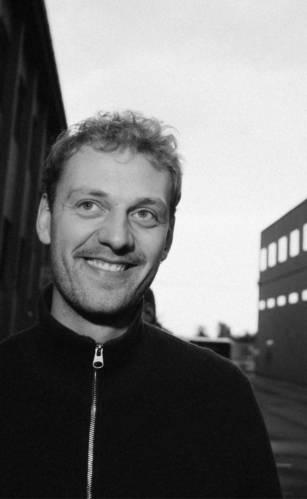

"Jeg brænder for at skabe mere end bare smukke designs – jeg vil udvikle løsninger, der er intuitive, tilgængelige for alle og virkelig gør en forskel i menneskers liv."
GUSTAV SALLING JUST JENSEN
Erfaring
6 måneder
Lokation
København, DK
Programmer
Fra skabertrang til designpassion: At forbedre hverdagen gennem kreative løsninger.
Fra jeg var barn, har jeg altid været tiltrukket af kunsten at skabe.
Senere blev denne fascination omformet af designverdenens muligheder.
Jeg fik en stilling i et co-working space i Sydhavnen, fyldt med
værksteder og kreative sjæle – arkitekter, designere, IT-udviklere og
mange flere.
Det var en verden af håndværk og innovation,
og jeg blev inspireret af at se, hvordan deres arbejde kunne forbedre
andre menneskers hverdag.
Da jeg startede på KEA, blev det
tydeligt for mig, hvilken kraft design har som redskab. Det var som at
åbne en dør til en ny verden, og siden har jeg ikke set mig tilbage.
Jeg brænder for at udforske, hvordan design kan flytte grænser,
forbedre oplevelser og gøre vores hverdag enklere og mere meningsfuld.
Joberfaring
2022-nu
Trifolium Aps
Projekt leder → Kontor og fælleskabs leder → Visuel Designer og SOME mannager.
Hos Trifolium har jeg arbejdet med projektstyring, grafiske opgaver og udviklingen af Instagram-strategien med fokus på visuel identitet og brugerengagement.
Uddannelse & kurser
2024-2026
KEA
Multimediedesign
2020
Engelsholm Højskole
Billedekunst, Filosofi, sociologi
2017-2020
Gefion Gymnasium
STX, Fysik A, Matematik A, Spansk A
2016
Truemax Academy
kursus i 3d modellering og animation
Tilbage til Forsiden